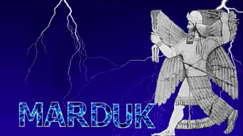

Have you ever found yourself in deep shift?
An appropriate question for Leap Day, is it not?
But seriously, have you? As in, you were headed one direction but with a sudden rumble of thunder you find yourself heading another way altogether. Or, a simple suggestion from a trusted voice in your life tilts your perspective enough that you find yourself seeing with new eyes the world you thought you had figured out. Or, an experience so profoundly rocks your world that everything about who you are is marked as “before and after.”

These are just a few descriptions of the gift of being thunderstruck: when something clicks, shifts, cracks open, electrifies you or reverberates through your body and changes you — all of you — for the better.
Sometimes being thunderstruck comes in the jolting blink of an eye. Sometimes we can hear the rumble in the distance, and we know it is headed our way. Sometimes the bolt rumbles and echoes throughout the rest of our lives...
In any form, the gift of being thunderstruck rearranges us.
During Lent the doubters + disciples who gather around The Table have been engaging with a season of reorientation — a time to reflect, reevaluate and return. We have been searching the depths and breadths of our lives for the change that is needed.Navigating our lives is not always easily perceived by our senses. The dark wood can be brewing thickly along the inner terrain of our lives, negotiable only through intuition, imagination and indirect ways of knowing. And that’s precisely why being thunderstruck is not always a bad thing. It booms and rumbles and shakes us up, echoing so we cannot miss it.
Like a lot of you may have been, I was terrified of thunder as a kid. So sudden, so loud, so menacing! As I grew out of my fear though, I began to relish in a good thunderstorm. I am till startled and overcome by the power of skyward booms, but amazed at the forces of nature wielding their flashes of light and resonate decibels in the atmosphere.
Such forces are at work in our lives too, if we will pay attention. Atmospheric disturbances meant to reposition us into more malleable, peaceable people.

Many ancient cultures depicted their gods as wielding lightning and thunder. Marduk, the god of the Babylonians located in Mesopotamia during the same historic period as the Jews, is shown here with the powerful forces in each hand. It is was not uncommon to refer to the divine as speaking thunderously, just as we read in the book of Job in the Old Testament.
“How is it that sometimes subtly, sometimes with
sudden startle, God breaks through the thick fog of our
collective blindness? Our lives confront us with the
inevitable experience of suffering: our own suffering, the suffering
we cause to others, the pain we
experience in and with the suffering of others. "Pay
attention," says the voice of God within us, "Here is an
opportunity to deepen your relationship with me! You
will find me when your heart breaks open with
compassionate love for all of creation. But you must let
the suffering touch you deeply enough that you begin to
see your own path as a path of compassion on behalf of
all living creatures."
(With Open Eyes: Discerning the Pattern of God's
Presence by Elaine M. Prevallet, SL
Weavings, Volume XXV, Number 3)
sudden startle, God breaks through the thick fog of our
collective blindness? Our lives confront us with the
inevitable experience of suffering: our own suffering, the suffering
we cause to others, the pain we
experience in and with the suffering of others. "Pay
attention," says the voice of God within us, "Here is an
opportunity to deepen your relationship with me! You
will find me when your heart breaks open with
compassionate love for all of creation. But you must let
the suffering touch you deeply enough that you begin to
see your own path as a path of compassion on behalf of
all living creatures."
(With Open Eyes: Discerning the Pattern of God's
Presence by Elaine M. Prevallet, SL
Weavings, Volume XXV, Number 3)
Around The Table last night we took to heart the gift of being thunderstruck which ultimately cracks-us-open with compassion. Whether with deeper tenderness toward our own stories, or greater capacity to show mercy to others.
“My heart pounds as I think of this.
It trembles within me.
Listen carefully to the thunder of God’s voice
as it rolls from his mouth.
It rolls across the heavens,
and his lightning flashes in every direction.
Then comes the roaring of the thunder—
the tremendous voice of his majesty.
He does not restrain it when he speaks.
God’s voice is glorious in the thunder.
We can’t even imagine the greatness of his power.
No wonder people everywhere fear him.
All who are wise show him reverence.”
(Job 37:1-5, 24, NLT)
It trembles within me.
Listen carefully to the thunder of God’s voice
as it rolls from his mouth.
It rolls across the heavens,
and his lightning flashes in every direction.
Then comes the roaring of the thunder—
the tremendous voice of his majesty.
He does not restrain it when he speaks.
God’s voice is glorious in the thunder.
We can’t even imagine the greatness of his power.
No wonder people everywhere fear him.
All who are wise show him reverence.”
(Job 37:1-5, 24, NLT)
When we are thunderstruck, we are forced to tune in, whether by surprise or anticipation. God’s thunderous voice breaks through the thick fog of our collective blindness with the confrontation: “Pay attention! Listen to your life!”
"Listen to your life. See it for the fathomless mystery it is.
In the boredom and pain of it,
no less than in the excitement and gladness:
touch, taste, smell your way to the holy and hidden heart of it,
because in the last analysis all moments are key moments,
and life itself is grace."
(Frederick Buechner, Now and Then: A Memoir of Vocation)
In the boredom and pain of it,
no less than in the excitement and gladness:
touch, taste, smell your way to the holy and hidden heart of it,
because in the last analysis all moments are key moments,
and life itself is grace."
(Frederick Buechner, Now and Then: A Memoir of Vocation)
How grateful we are that around The Table we are able to see our lives for what they are. Or at least search for what they are.
As we touch, taste and smell the nourishment we find through the breaking of bread, and the sharing of the cup of wine, we are getting to the holy and hidden heart of our lives, our lives of grace. God’s grace comes to us in community, in the gathering of our thunderstruck selves from different corners, different opinions, different origins so that in turn, we can be sent out to love each other so that those to whom love is a stranger might find in us, generous friends.